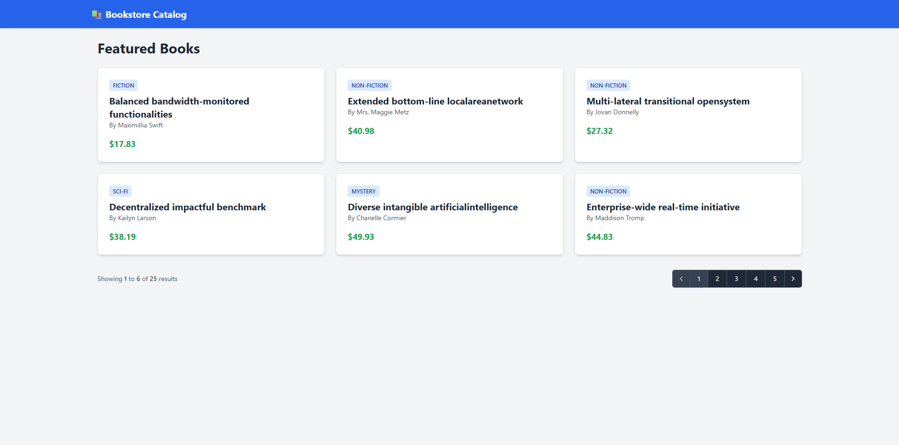

Nathalie M. Amande.
Building things in networks & code.
I'm a friendly IT student who is always willing to learn and try new things.
About me
I am a 3rd year BSIT student at Eastern Samar State University, learning networking, web application development, and other areas of IT. I chose IT because I'm curious about how websites, applications, and computer systems actually work under the hood.
Outside of school and IT, I enjoy playing volleyball, watching movies and series, listening to music, and playing games — and spending time with family and friends whenever I get the chance. These help me relax and come back to schoolwork with a clear head.
Right now I'm hoping to gain more hands-on IT experience, especially through an internship or part-time work — a chance to apply what I've learned in school, sharpen my skills, and grow through real-world projects.
Skills
Languages
- HTML
- JavaScript
- SQL
- C++ (Arduino)
Tools
- Visual Studio Code
- MySQL
- CodeIgniter 4
- Git / GitHub
Projects
Certifications & Education
Certifications
Education
2026 — 2027 (current)
BS Information Technology
Eastern Samar State University — 3rd year
2025 — 2026
BS Information Technology
Eastern Samar State University — 2nd year
2024 — 2025
BS Information Technology
Eastern Samar State University — 1st year
Get in touch
Open to internship and part-time opportunities in IT. Feel free to reach out any time — I'd love to hear from you.